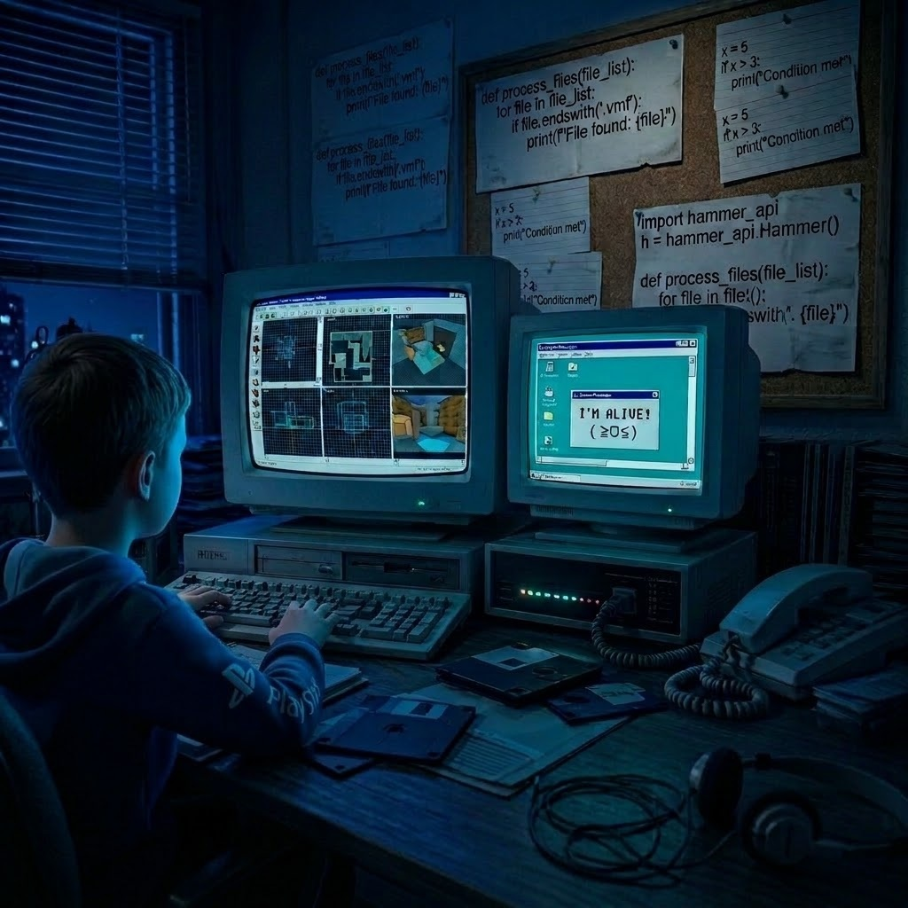

FOCUS_01
Systems & IT Infrastructure
Windows Server, Active Directory, DNS, identity management, networking fundamentals, and system administration labs.
Exploring systems, cloud infrastructure, automation, and security by building practical labs, solving problems, and documenting what I learn along the way.

I'm Kaan, an aspiring Systems and Cloud Engineer based in Türkiye, interested in the technology that keeps systems and infrastructure running.
My main interests are IT infrastructure, networking, cloud engineering, DevOps, automation, and security. I enjoy understanding how services communicate, how infrastructure is configured, and how technical problems can be investigated instead of simply guessing at a fix.
I build personal labs and independent projects to turn what I learn into practical experience. My work includes Windows Server and Active Directory environments, AWS/Azure/GCP labs, Terraform, container and monitoring experiments, and CartmanView — my own Python-based file encryption and decryption application.
I'm continuously developing my skills and looking for an opportunity to contribute, learn from real-world challenges, and grow as an engineer. I'm based in Türkiye and open to international opportunities with employer-sponsored relocation.
"Learn by doing.
Improve by solving.
Grow by building."
A practical mix of infrastructure, cloud platforms, automation, and security explored through personal projects and labs.
Windows Server, Active Directory, DNS, identity management, networking fundamentals, and system administration labs.
Building and exploring cloud infrastructure across major providers, including resource configuration and access control.
Experimenting with repeatable deployments, containers, configuration management, and infrastructure monitoring.
Exploring security concepts, encryption, scripting, and practical tooling through self-directed development projects.
Personal projects and lab environments created to practice, experiment, troubleshoot, and learn by doing.
 PROJECT / 001
PROJECT / 001
A multi-cloud lab exploring infrastructure provisioning, cloud services, access management, monitoring, and repeatable deployment workflows using hands-on experiments.
 PROJECT / 002
PROJECT / 002
A personal lab for exploring Windows Server, Active Directory, identity services, DNS, administration, and hybrid infrastructure experiments.
 PROJECT / 003
PROJECT / 003
A Python desktop application for encrypting, decrypting, and viewing protected files. It combines AES-GCM authenticated encryption with a custom CartmanCodec.
Every lab is an opportunity to understand what happens behind the scenes — how services communicate, where configurations fail, and how infrastructure components depend on one another.
I value practical troubleshooting, clear documentation, and steady improvement over simply collecting technologies or memorizing commands.
I'm interested in opportunities where I can contribute, keep learning, and grow through real technical challenges. Open to international opportunities and employer-sponsored relocation.